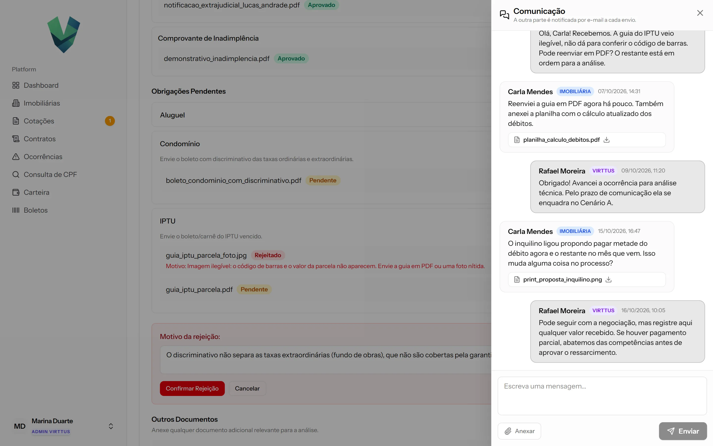
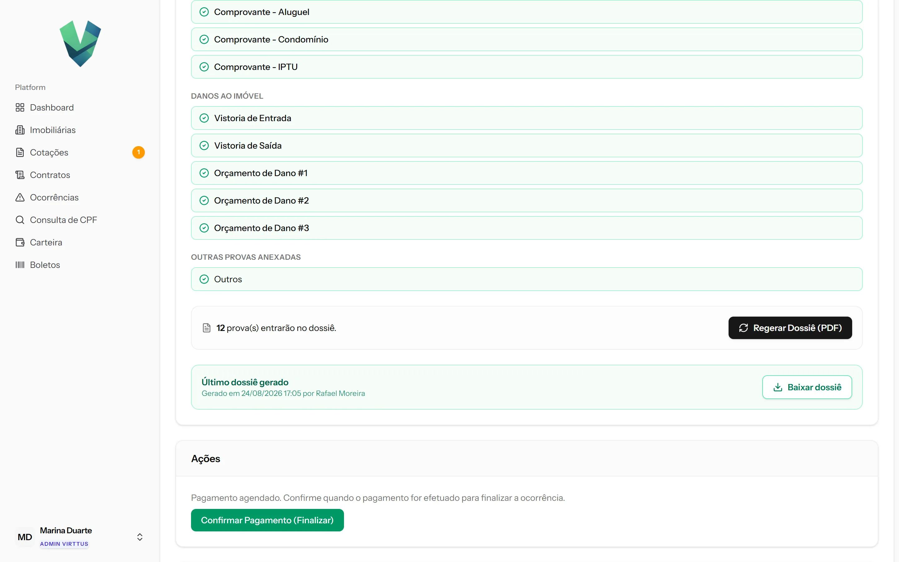
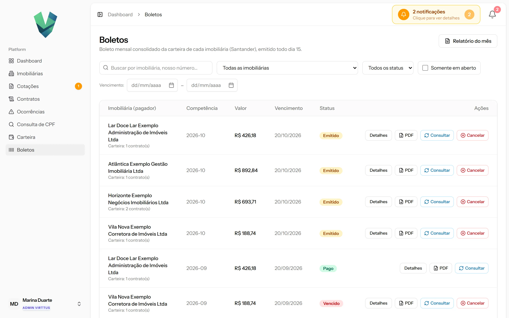
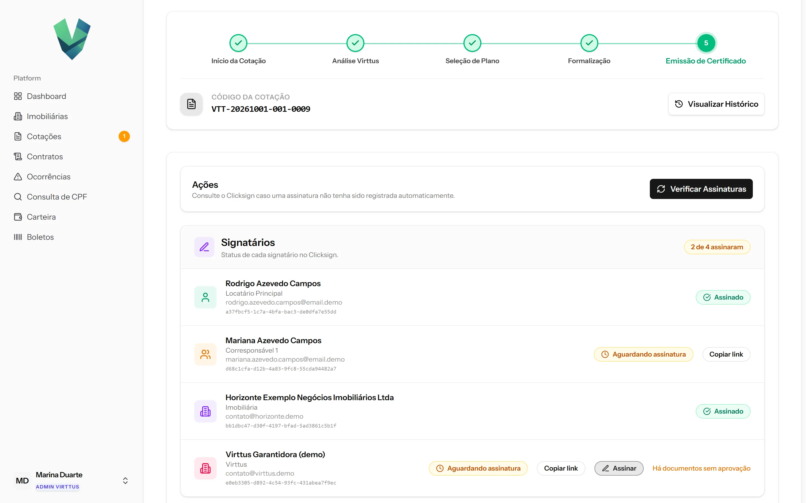
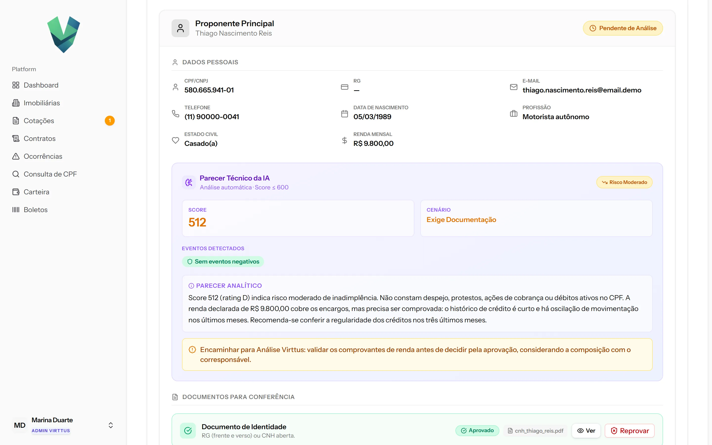
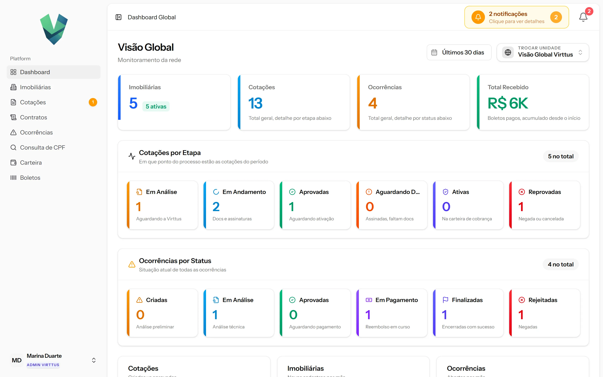
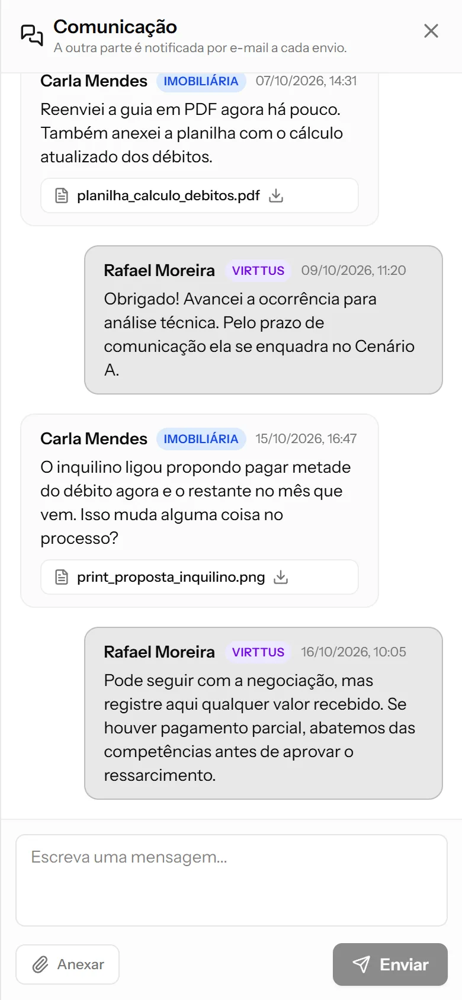
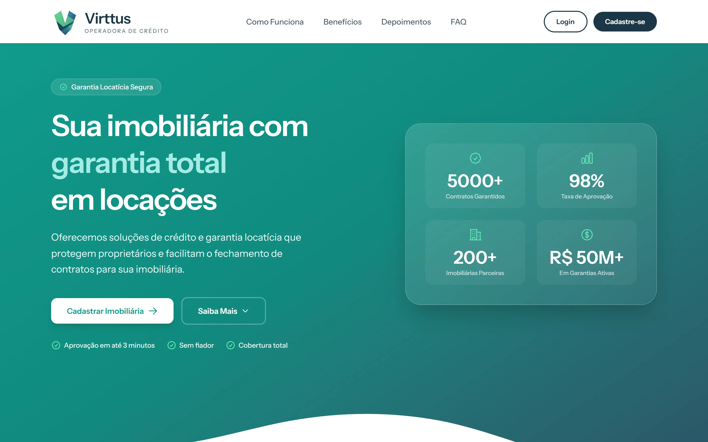

Estudo de caso · Garantia locatícia
Virttus
Plataforma em que imobiliárias contratam garantia locatícia, a alternativa ao fiador: o inquilino passa por análise de crédito, o certificado sai assinado na Clicksign e cobrado por boleto, e o sinistro tem um fluxo próprio.








Telas de um ambiente de demonstração com dados fictícios.
O problema
A garantia locatícia depende de análise de crédito, de conferência de documentos de vários participantes, de assinatura do certificado e de cobrança mensal, e cada uma dessas etapas costumava ser feita à mão.
Quando o inquilino deixa de pagar, a imobiliária abre um sinistro, que precisa de prazos, provas e um dossiê. A plataforma junta cotação, análise, emissão, cobrança e sinistro num único fluxo, com papéis separados para imobiliária, analista e administração.
O que o sistema faz
- Cotação em etapas: proponente, corresponsáveis, análise, plano, imóvel e locador, com cada documento aprovado ou recusado individualmente.
- Análise de crédito com consulta a bureau e parecer.
- Certificado em PDF enviado para assinatura eletrônica na Clicksign.
- Cobrança por boletos do Santander, com faturamento mensal, segunda via e carteira.
- Ocorrências (sinistros) com chat, anexos, prazos, obrigações por competência e dossiê em PDF.
- Notificações em tempo real e gestão de imobiliárias, usuários e permissões.
Minha parte
O sistema foi feito por dois desenvolvedores. Fiquei com o sinistro e com as integrações que movimentam dinheiro e documentos:
- O módulo de ocorrências inteiro: chat, decisão por arquivo, cálculo de prazo, obrigações por competência, registro de pagamento e dossiê.
- A emissão e a liquidação de boletos no Santander, com mTLS.
- A maior parte da integração com a Clicksign: envio, reenvio, sincronização e webhook.
- O suporte a locador pessoa física, além da imobiliária pessoa jurídica.
Decisões técnicas
mTLS com o banco em cURL direto
O Santander exige certificado A1 e mTLS. O cliente HTTP usa cURL direto, porque o banco tratava a requisição montada pelo Guzzle de forma diferente. O payload do boleto e o webhook de liquidação têm testes.
Sinistro com prazos e prova
Cada ocorrência tem obrigações por competência e prazo calculado, e cada arquivo enviado recebe uma decisão própria. No fim, o sistema monta o dossiê da ocorrência em PDF.
Assinatura que não se perde
O status do certificado chega da Clicksign por webhook, e uma rotina de sincronização confere o status direto na Clicksign. O analista também pode reenviar o pedido de assinatura.
Deploy contínuo
Docker com app, worker, scheduler e servidor de websockets. O GitLab CI faz build, migrations e reinício das filas num runner próprio, e um compose com ngrok permite testar o webhook do banco em homologação.
Em números
Stack
- Laravel 12
- PHP 8.3
- Vue 3
- TypeScript
- Inertia 2
- Tailwind 4
- PostgreSQL
- Redis
- Laravel Reverb
- Fortify
- DomPDF
- Pest
- Docker
- GitLab CI